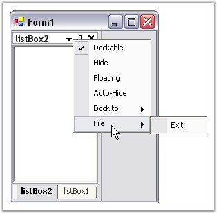

This section covers the following events:
This event occurs when the right mouse button is clicked over a autohidden tab control.
Event Data
The event handler receives an argument of type AutoHideTabContextMenuEventArgs containing data related to this event. The following AutoHideTabContextMenuEventArgs properties provide information specific to this event.
|
Members |
Description |
|
ContextMenu |
Gets / sets the context menu to be displayed. |
|
DockBorder |
This returns the side to where the AutoHideTab is aligned. |
|
[C#]
private void dockingManager1_AutoHideTabContextMenu(object sender, Syncfusion.Windows.Forms.Tools.AutoHideTabContextMenuEventArgs arg) { // You can see the below line in output window during runtime. Console.WriteLine("AutoHideTabContextMenu event is raised"); } |
|
[VB.NET]
Private Sub dockingManager1_AutoHideTabContextMenu(ByVal sender As Object, ByVal arg As Syncfusion.Windows.Forms.Tools.AutoHideTabContextMenuEventArgs) ' You can see the below line in output window during runtime. Console.WriteLine("AutoHideTabContextMenu event is raised") End Sub |
The DockContextMenu event is fired when the mouse is right-clicked over a docking window's caption.
Event Data
The event handler receives an argument of type DockContextMenuEventArgs containing data related to this event. The following DockContextMenuEventArgs properties provide information specific to this event.
|
Members |
Description |
|
ContextMenu |
Gets or sets the context menu to be displayed. |
|
Owner |
Gets the control that is displaying the context menu. |
Editing the context menu of a Docked Control
The DockContextMenuEventArgs allows us to,
· Edit the context menu that appears when right clicked on the caption bar (Using DockContextMenuEventArgs.ContextMenu).
· Retrieve the control that is displaying the context menu (Using DockContextMenuEventArgs.Owner).
Create a simple docking window. Add the required name spaces. Declare and initialize the bar items to be placed in the context menu as shown in the code below.
|
[C#]
//Adding namespaces using Syncfusion.Windows.Forms.Tools.XPMenus;
//Declaring the bar items private Syncfusion.Windows.Forms.Tools.XPMenus.BarItem bar1; private Syncfusion.Windows.Forms.Tools.XPMenus.ParentBarItem pbiFile;
//Initialize and set the properties. this.pbiFile = new Syncfusion.Windows.Forms.Tools.XPMenus.ParentBarItem(); this.bar1 = new Syncfusion.Windows.Forms.Tools.XPMenus.BarItem(); this.pbiFile.Text = "File"; this.bar1.Text = "Exit"; this.pbiFile.Items.AddRange(new Syncfusion.Windows.Forms.Tools.XPMenus.BarItem[] {this.bar1}); //Call the event this.dockingManager1.DockContextMenu += new Syncfusion.Windows.Forms.Tools.DockContextMenuEventHandler(this.dockingManager1_DockContextMenu);
private void dockingManager1_DockContextMenu(object sender, Syncfusion.Windows.Forms.Tools.DockContextMenuEventArgs arg) { arg.ContextMenu.ParentBarItem.Items.Add(this.pbiFile); } |
|
[VB.NET]
' Adding Namespace Imports Syncfusion.Windows.Forms.Tools.XPMenus
'Declaration Private pbiFile As Syncfusion.Windows.Forms.Tools.XPMenus.ParentBarItem Private WithEvents bar1 As Syncfusion.Windows.Forms.Tools.XPMenus.BarItem 'Initialize and set the properties Me.pbiFile = New Syncfusion.Windows.Forms.Tools.XPMenus.ParentBarItem() Me.bar1 = New Syncfusion.Windows.Forms.Tools.XPMenus.BarItem() Me.pbiFile.Text = "File" Me.bar1.Text = "Exit" Me.pbiFile.Items.AddRange(New Syncfusion.Windows.Forms.Tools.XPMenus.BarItem() { Me.bar1})
//handling the event Private Sub dockingManager1_DockContextMenu(ByVal sender As Object, ByVal arg As Syncfusion.Windows.Forms.Tools.DockContextMenuEventArgs) arg.ContextMenu.ParentBarItem.Items.Add(Me.pbiFile) End Sub |

Figure 100: Context Menu Items Added
See Also
DockMenuClick event is fired, when the redock context menu item has been clicked. The menu button available for the docked controls, provides options for changing the docking position. Whenever the user tries to redock the control to some other position, DockMenuClick event will be triggered. The options provided are left, top, right and bottom. The redocked style can be displayed using the below code.
Event Data
The DockMenuClickEventHandler receives an argument of type DockMenuClickEventArgs containing data related to this event. The following DockMenuClickEventArgs properties provide information specific to this event.
|
Members |
Description |
|
DockingStyle |
Returns the docking of the window. |
|
[C#]
private void dockingManager1_DocMenuClick(object sender, Syncfusion.Windows.Forms.Tools.DockMenuClickEventArgs arg) { // You can see the below line in output window during runtime. Console.WriteLine("Dock Menu Click event is raised"); //Display the Docking Style Console.WriteLine("DockingStyle : " + arg.DockingStyle.ToString()); } |
|
[VB.NET]
Private Sub dockingManager1_DocMenuClick(ByVal sender As Object, ByVal arg As Syncfusion.Windows.Forms.Tools.DockMenuClickEventArgs) ' You can see the below line in output window during runtime. Console.WriteLine("Dock Menu click event is raised") 'Display the Docking Style Console.WriteLine("DockingStyle : " + arg.DockingStyle.ToString()); End Sub |